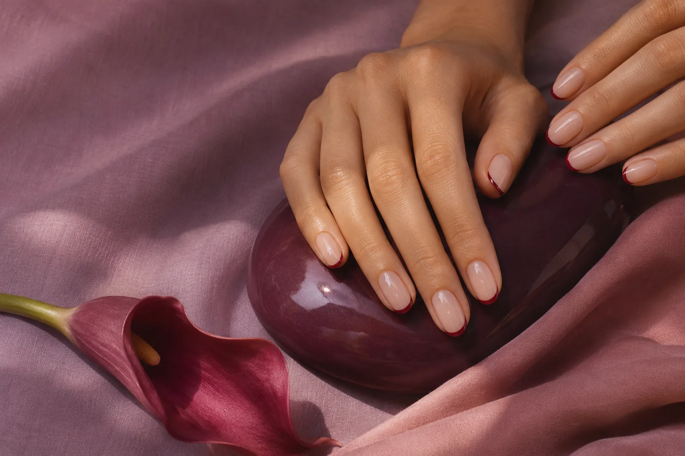

Калининград · nail studio
Маникюр
в своём
цвете.
От прозрачного нюда до вишнёвого френча. Выберите дизайн, который хочется носить каждый день.

Меню студии
Что выберем сегодня?
Найдите услугу и сразу добавьте её в заявку.
О студии
Время для себя.
В «Лиле» можно выбрать оттенок на месте, принести свой референс или попросить мастера помочь с дизайном. На визите уточним форму, длину и покрытие.
Как к нам прийтиПалитра
Цвет, который ваш.
Нажмите на оттенок, чтобы увидеть его на ногтях.
Услуги и цены
Прайс студии.
Портфолио
Сохраните идею.
Заметки мастера
Детали решают.
Нюд с характером
Чтобы нюд смотрелся естественно, приложите образец покрытия к руке при дневном свете. Для мягкого эффекта попробуйте полупрозрачную базу, для более плотного — молочный или пыльно-розовый оттенок.
Как носить тёмный лак
Глубокая слива и вишня выразительно смотрятся даже на коротких ногтях. Если хочется оставить больше естественного цвета, попробуйте тонкий френч или один тёмный акцент.
Перед визитом
Полезно знать.
Как выбрать услугу?
Для однотонного покрытия выберите «Маникюр с покрытием». Если хотите френч, рисунок или сложный дизайн, отметьте нужную услугу или выберите работу из галереи.
Нужно ли заранее снимать покрытие?
Добавьте комментарий о текущем покрытии к заявке. Студия уточнит, потребуется ли снятие и сколько времени заложить.
Когда запись будет подтверждена?
После заявки администратор свяжется с вами и согласует время. До этого указанное время считается пожеланием.
Контакты